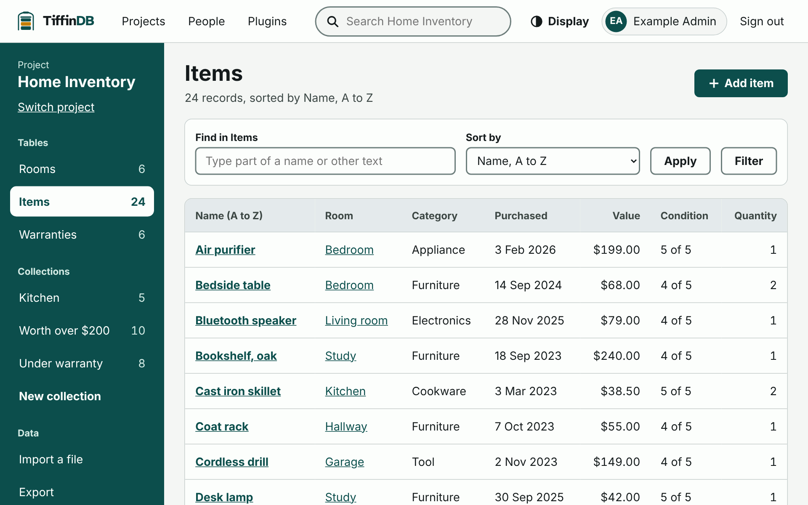

TiffinDB documentation
Your own small databases, on your own server
TiffinDB is a free, self-hosted personal database application. These pages show how to use it, how to install it, and how to continue its development.

Start hereThe three guides
Each guide is written for a different reader. Choose the one that agrees with what you must do.
-
User Guide
Sign in, add and find records, link records, attach files, import and export data, and change how the screen looks.
Written in Simplified Technical English. No technical knowledge is necessary.
-
Install Guide
Put TiffinDB on shared PHP web hosting or on your own Apache server, complete the setup page, and keep the installation healthy.
Also shows how to start a development server in a few minutes.
-
Developer Handoff and Roadmap
The architecture, the code layout, the rules of the repository, what is built, what is not, and the order of the work that remains.
Assumes no earlier knowledge of the project.
OverviewWhat TiffinDB is
TiffinDB is a web application for small personal databases: a home inventory, a recipe collection, a list of books, the records of a club. One person in a household or small group installs it on ordinary web hosting. The other people use it in a web browser.
It was started as a free replacement for a discontinued personal database product for desktop computers. The data stays in files that the owner controls, in an open and documented format.
What it does today
- Projects, tables, and 17 types of field, with links between tables.
- Lists with search, sort, and filter, and saved collections.
- A form for each record, with attached files.
- Import from CSV and XLSX. Export to CSV, XLSX, and JSON. Project archives for backup and transfer.
- Accounts with two roles, and sharing for each project.
- A trash for records, automatic snapshots, and an audit log.
- Four colour themes, six typefaces, and five text sizes for each person.
What is not built yet
- The form editor (milestone M5).
- Import of files from the discontinued product (milestone M6).
- The release archive and the upgrade path (milestone M7).
- After version 1: a drag-and-drop form editor and an MCP server.
The roadmap gives the details.
StatusWhere the project stands
TiffinDB is in development. Version 1 is planned as eight milestones, M0 to M7. Five are complete. Two more milestones, M8 and M9, come after version 1.
docs/build/ledger.md) is the record of the exact state. The Developer Handoff explains each milestone.Caution
There is no release yet. Until milestone M7 is complete, there is no release archive and no tested upgrade path. Make a project archive of all important data before you update an installation.
ConventionsHow to read these pages
| You see | It means |
|---|---|
| Save changes | The name of a button, a link, or a field, written as it shows on the screen. |
| Tab | A key on the keyboard. |
config/local.php | A file name, a command, or text that you type. |
| Admin | Only a person with the Admin role can do the task. |
Note
A note gives information that helps you do a task.
Caution
A caution tells you about a risk to your data.
Warning
A warning tells you about a risk to the security of the installation or of the people who use it.
All screenshots show the example project Home Inventory. All names, items, and values in it are invented. The pages follow the light or dark setting of your device, and you can print them.
ReferenceMore reference material
These pages are the entry point. The repository holds more detailed records, written in Markdown.
| Location | Content |
|---|---|
docs/plan.md | The project plan: goals, architecture, milestones, and risks. |
docs/decisions/ | The architecture decision records (ADRs). Each decision is recorded there before it is implemented. |
docs/specs/ | The specification of each milestone, with notes on what was built. |
docs/formats/ | The project file format and the JSON export format. |
docs/build/ledger.md | The build ledger: the state of each milestone, work package, and open decision. |
docs/design/ and docs/brand/ | The design tokens, the model screens, the design notes for each milestone, and the logo rules. |
docs/dependencies.md | Each dependency and its licence. |
tools/docs/ | The scripts that make the example data and the screenshots for these pages. |
TiffinDB is free software under the GNU Affero General Public License, version 3 or later. Source code: github.com/osh-labs/tiffindb.